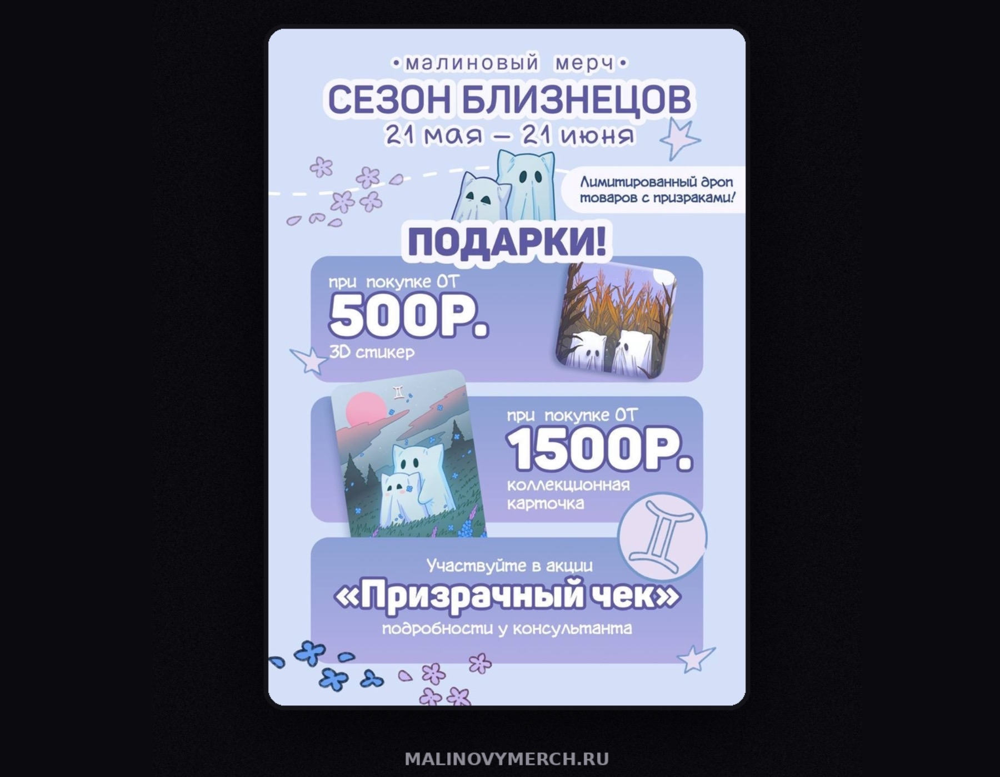
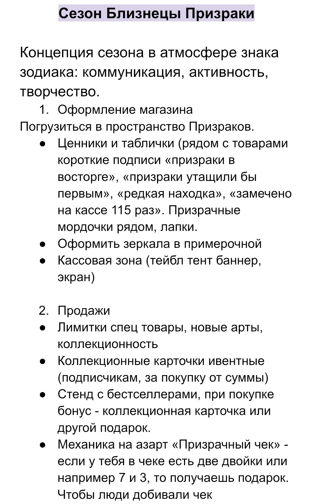
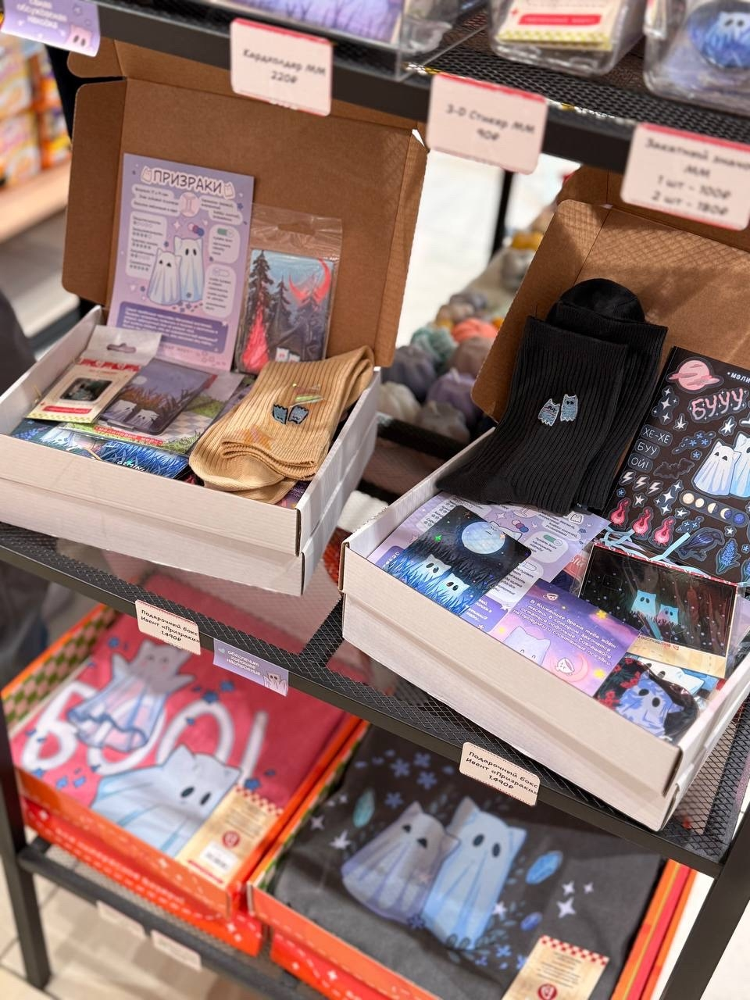

Каждый месяц бренд запускал кампанию, связанную с одним из персонажей и знаком зодиака. Задача — создать повод для визита в магазин, увеличить вовлечённость и стимулировать покупки.
Получив общую задачу, самостоятельно разрабатывала:


